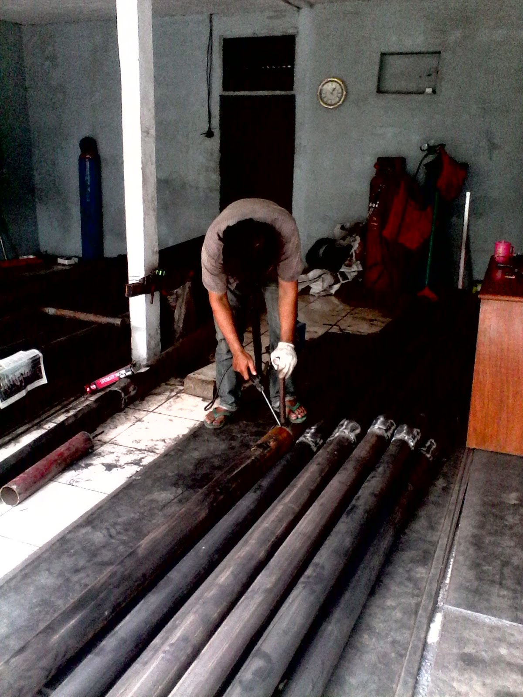

Jual Atap Lengkung di Palangkaraya ☎ 0822 4582 0777 (Rinanti)
Atap adalah hal yang paling penting saat membangun sebuah bangunan. Dikarenakan banyak keunggulan yang mengalahkan kayu sebagai rangka konvensional. Layaknya projek pembangunan yang magak di tengah jalan karena tidak mempunyai atap yang bisa dipakai di atasnya. Adapula atap galvalum yang berbentuk unik yaitu atap lengkung galvalum. Jadi simaklah baik-baik apa saja yang akan saya ulas dalam artikel berikut ini. Maka simaklah artikel yang akan saya ulas berikut ini. Penasaran seperti apakah fungsi galvalum sebagai atap? Silakan simak artikel berikut ini.
Distributor & Supplier Atap Lengkung

Dewasa ini, atap lengkung Palangkaraya sangat dibutuhkan bagi berbagai macam jenis bangunan.
Bentuk dari setiap atap tersebut sangat beragam. Jarang sekali kami melihat bahwa atap galvalum lengkung ini dapat jatuh karena tiupan angin kencang.
Bahkan tidak sedikit yang rela mengeluarkan gocek yang tidak sedikit mengingat harganya yang sedikit lebih mahal dibandingkan atap galvalum dengan model biasa. Bila anda ingin mengetahui harga dari setiap jenis atap lengkung Palangkaraya maka anda cukup menghubungi kontak yang tertera pada website dis.or.id. dis.or.id adalah distributor terpercaya untuk anda. Kami menyediakan atap lengkung Palangkaraya sesuai dengan keinginan anda.
Info Pemesanan Selengkapnya
Google Maps: https://www.google.com/maps/d/u/0/viewer?mid=1jTQUf9ULWdUIa8iDLwabVtcOdrQf8Eme&ll=-7.272623401464149%2C112.6482284&z=17
Note: https://www.facebook.com/notes/distributor-of-industrial-supply/pabrik-supplier-atap-lengkung/1782710675362145/
Event: https://www.facebook.com/events/137280070316926/
Portfolio Produk: https://www.facebook.com/pg/DistributorOfIndustrialSupplyDIS/photos/?tab=album&album_id=1683772021922678
Distributor & Supplier Besi Beton

Beragam jenis beton tersebut bisa diaplikasikan untuk berbagai kebutuhan pembangunan. Apa Cepetan merupakan besi yang dapat diaplikasikan pada suatu gedung karena bahan ini lebih mudah didapat dan juga harganya pun lebih ekonomis dibandingkan dengan penggunaan material lainnya. Pendidikan sangat penting karena digunakan dalam berbagai bentuk struktur bangunan baik bangunan kecil maupun bangunan besar seperti jembatan, Bendungan, terowongan dan masih banyak lagi.
Anda bisa mendapatkan besi beton dengan harga yang sangat murah dan terjangkau.
Distributor & Supplier Steel Grating

Plat Grating terbaru memiliki kualitas terbaik yang bisa digunakan untuk sarana pembangunan pada industri hingga pertambangan. Saat ini, Plat Grating bisa di dapatkan dengan mudah. Secara umum, produk ini digunakan dalam kontruksi lantai, kemudian deck, anak tangga pada bangunan pabrik kemudian, tambang minyak dan sejumlah bangunan industri lain nya. Tetapi, jangan hanya memperhatikan harga karena Anda harus mempertimbangkan kualitasnya terlebih dahulu. Selain untuk keamanan, juga untuk aksesoris kolam renang. Pada umumnya, Grating hanya memiliki 2 type, yaitu serrated atau bergerigi dan plain atau polos.
Maka dari itu, jika anda membutuhkan steel grating untuk keperluan pembangunan, anda bisa langsung saja mengunjungi dis.or.id.
Distributor & Supplier Pipa (Hitam/Gas, Galvanis)

Karena kekuatan yang dimiliki olehnya, tak heran bila pipa hitam banyak digunakan pada kebutuhan konstruksi. Kebanyakan orang memanfaatkan pipa hitam ini pada area pertambangan gas dan minyak, sebagian orang pun bahkan mengira bahwa nama asli dari pipa hitam memanglah pipa gas. Pipa hitam gas dapat anda aplikasikan untuk berbagai keperluan bahkan di segala kondisi cuaca indonesia. Anda bisa memesan pipa hitam ini dari ukuran ½ inci sampai 40 inci. Anda dapat segera menghubungi kami untuk informasi lebih detail mengenai pemesanan pipa hitam.
Distributor & Supplier Kawat Bronjong/Gabion

Kawat bronjong berfungsi sebagai pencegah erosi. Ini seperti halnya kawat lainnya. Namun, banyak yang tidak tahu jika ternyata kawat bronjong ini juga digunakan sebagai pelabis tiang penyangga jembatan. Kawat ini berfungsi agar tidak terjadi gerusan akibat arus air yang mengakibatkan tiang penyangga rusak di mana hal ini bisa berakhir dengan rubuhnya jembatan. Tujuannya agar bebatuan tidak hancur karena terkena ombak terus menerus. Ini bisa Anda lihat di pinggir-pinggir pantai.
Untuk itu, kini kawat bronjong sangat banyak dibutuhkan pada segal bidang.
Distributor & Supplier WF H-beam

Besi WF kini banyak dikenal sebagai salah satu jenis profil baja Struktural yang berkualitas. Jenis besi ini banyak dimanfaatkan sebagai bahan konstruksi baja. Untuk membuat bangunan seperti rumah, pagar, industri, jalan raya, pabrik, dan lain-lain Anda bisa memakai jenis besi ini. Anda juga bisa lebih gampang saat memakai besi ini karena sifatnya yang tidak terlalu berat dan bisa dibilang ringan dengan komponen yang seimbang.
Besi Wf berkualitas tinggi bisa anda dapatkan dengan sangat mudah di dis.or.id. Harga yang murah tentunya di dis.or.id juga menjamin kualitas dan mutu terbaiknya juga. Disana anda bisa mendapatkan besi wf yang anda inginkan.
Distributor & Supplier Expanded Metal

Expanded Metal adalah sebuah material dari baja yang dibentuk dengan model berlubang hampir mirip dengan anyaman. Fungsi expanded metal diantaranya untuk anak tangga pada tower dan ternyata banyak juga digunakan di dermaga/pertambangan/konstruksi lepas pantai. Sedangkan untuk keunggulannya sendiri adalah memiliki bentuk yang indah dan juga homogen, lebih vareatif dalam hal pengaplikasiannya, relatif lebih ringan, dan lebih mudah dipasang.
Jenis ini dapat Anda gunakan sebagai pengaman partisi, pagar pembatas, penutup mesin, tanduk kendaraan, dinding panel, angin-angin dan masih banyak lagi.
Distributor & Supplier Plat (Hitam, Kapal, Bordes, Strip)

Plat yang satu ini mungkin yang paling banyak kita jumpai, bukan sebagai plat bahan bangunan namun sering digunakan sebagai plat lantai pabrik, kendaraan dan berbagai fungsi lainnya. Dengan membeli secara online, anda akan lebih efektif dan efisien dalam melakukan pemesanan. Plat besi bordes ini saat ini lebih banyak digunakan sebagai bahan pembuatan mobil, terutama mobil pengangkut seperti truk, pick up, dan lain sebagai nya.
Jika anda sedang mencari plat hitam, bordes, kapal dan jenis plat lainnya. Anda bisa langsung saja mengunjungi dis.or.id. Disana terdapat berbagai macam plat yang anda butuhkan dan pastinya dengan harga yang sangat terjangkau. Anda pastinya tidak akan rugi jika membeli plat besi dengan banyak varian dan jenis yang disediakan disana.
Distributor & Supplier Floor Deck (Bondex)

Floor deck atau bondek merupakan material pengganti material konvensional yang berbentuk seperti papan lebar atau triplek. Biasa di gunakan sebagai alas dalam proses pembuatan lantai dan atap dak beton. Pemakaian dari floor deck juga bisa membuat proses pengerjaan dan pembuatan dak menjadi lebih mudah, cepat dan efisien.
Floor deck berkualitas tinggi bisa anda dapatkan dengan mudah yaitu mengunjungi situs dis.or.id. Disana anda bisa mendapatkan floor deck yang anda inginkan dan tentunya dengan harga yang jauh lebih murah di bandingkan dengan tempat lainnya.
Distributor & Supplier Atap Galvalum

Pada kesempatan ini, kami akan menjelaskan pengertian dari atap seng galvalum. Apalagi bila ruangan tersebut tidak dilengkapi pendingin ruangan.
Maka, apakah solusi bagi masalah tersebut? Salah satu solusi yang kami berikan adalah Atap galvalum. Itulah sedikit perbedaan kecil dari rangka atap galvanis dengan kayu. Anda pastinya sudah banyak melihat rumah menggunakan atap jenis ini.
Jenisnya pun sangat beragam, ukurannya pun juga banyak sehingga gampang untuk menyesuaikan kebutuhan rangka atap anda. Bila bebannya berat maka anda harus memakai galvalum dengan ukuran yang lebih besar. Ini dikarenakan seng menyebabkan rumah anda menjadi terasa panas. Karena galvalum mempunyai daya tahan karat 4x dari galvanis.
Distributor & Supplier Truss Canal C

Sebagai informasi untuk anda, bahwa besi kanal C ini di kalangan para pekerja bangunan juga kenal dengan nama Besi CNP. Jadi, galvalum adalah salah satu jenis baja terbaik dimana memiliki cirikas ringan dan tipis namun memiliki daya tahan, dan kekuatan yang sangat baik bahkan di klaim lebih baik bila kita bandingkan dengan baja konvesional. Besi kanal C ini amat populer dalam dunia pembangunan. Besi kanal C ini lebih banyak di pakai untuk atap sebuah rumah, terutama dalam membangun rangka atap nya. Jarak antar reng galvalume perlu diperhatikan. Satu untuk rangka dan satunya lagi adalah untuk atap. Bagi anda yang sedang mencari besi kanal C maka saya merekomendasikan anda untuk mengujungi dis.or.id. Segala sesuatu juka diukur sesuai dengan ilmunya maka akan menghasilkan karya yang bangus serta hemat biaya. Kunjungi website dis.or.id untuk info lebih lanjut dan hubungi kontak yang tersedia sesuai dengan kebutuhan anda.
Distributor & Supplier Hollow Galvalum

Hollow Galvalum adalah bahan material bangunan yang terbuat dari logam dan bersifat anti karat. Untuk memudahkan pemasangan atap, tentunya diperlukan hollow galvalum yang berkualitas bukan?
Rumah rumah masa kini, sudah banyak yang menggunakan rangka jenis hollow untuk pembuatan plafonnya. Pastikan untuk menghubungi kami saat ini juga. Dan apabila memungkinakan, pilihlah produk yang berstandar SNI dan bersertifikat. Kami akan mengirim barang pesanan anda sampai pada tujuan dengan aman, cepat dan tepat tujuan. Tunggu apa lagi, silahkan hubungi customer service kami untuk melakukan pemesanan hollow galvalum.
Distributor & Supplier Seng Gelombang

Seiring perkembangan jaman, seng gelombang mengalami peningkatan dari waktu ke waktu. Andapun wajib memperhatikan bagaimana atap bagian bangunan tersebut apakah berkualitas ataukah tidak, atap dengan kualitas rendah akan beresiko kerusakan maupun kebocoran yang pasti merugikan seisi bangunan ruangan tersebut. Seng gelombang adalah salah satu solusi yang kami rekomendasikan untuk anda. Seng gelombang sekarang ini diburu banyak masyarakat untuk menutup bagian atap bangunan mereka. Melihat dari keunggulannya ini, seng gelombang warna memang memiliki harga yang relatif lebih mahal. Pemasangan seng pada atap rumah haruslah dibantu dengan kerangka kayu, atau bisa juga anda memanfaatkan kerangka galvalum yang kini sudah bermunculan di masyarakat dan lebih unggul di banding kerangka kayu sendiri.
Tetapi, janganlah ragu dengan hal demikian. Seng gelombang dengan warna ataupun transparan amatlah awet bila dibandingkan dengan bahan pembuat atap lainnya.
Distributor & Supplier Plat Seng

Plat seng dan plat galvalum banyak digunakan untuk berbagai kebutuhan, dari kebutuhan pembangunan rumah, industri, pabrik dan berbagai kegunaan lainnya. Anda dapat memilih lebaran atau per meter sesuai dengan fungsinya.
Hal ini tidak lain dikarenakan plat galvanis lembaran memiliki ukuran yang lebih luas dan bermeter meter. Jika anda penasaran dengan harga plat galvanis ini, silahkan hubungi customer service kami untuk menanyakannya. Selain lebih hemat, juga anda tidak harus membuang bagian yang tersisa. Namun apabila anda berencana membangun sebuah atap dari awal, sebaik nya anda membeli plat galvanis lembaran, karena kebutuhan anda banyak dan juga luas, sehingga yang lembaran ini akan lebih efektif untuk anda.
Sebuah rumah tidak akan bisa disebut rumah jika dalam komponen nya tidak ada atap nya. Lalu berapa harga plat galvanis 2018? Bila anda sedang mencari harga terbaru hari ini juga, anda dapat menghubungi kami karena kami menjual plat galvanis, galvalum dengan berbagai ketebalan dan ukuran.
Distributor & Supplier Genteng Metal

Genteng metal adalah salah satu jenis genteng yang berbahan dasar Zincalume, bahan ini merupakan salah satu jenis bahan yang digunakan pada baja ringan. Penggunaan genteng metal memiliki kelebihan seperti tidak adanya biaya perawatan karena genteng tidak akan berkarat, jamur ataupun pecah. Kami siap melayani pembelian dalam jumlah kecil ataupaun partai besar untuk tiap tiap brand tersebut. Selain itu genteng metal dinilai lebih anti bocor. Genteng metal dinilai lebih praktis dan lebih awet. Apakah anda sedang mencari genteng metal berkualitas? Maka anda berada di tempat yang tepat, silakan kunjungi dis.or.id dan dapatkan info menarik khusus untuk anda yang ingin segera mengetahui keunggulan genteng metal ini.
kami berusaha mencari kepuasan pelanggan kami.
Distributor & Supplier Besi Wiremesh

Wiremesh merupakan besi lonjor panjang yang disusun seperti anyaman sehingga membentuk lembaran. Besi wiremesh sering di anggap banyak orang adalah besi anyam karena strukturnya yang mirip dengan anyaman. Struktur anyam dari besi wiremesh sendiri juga bermacam-macam, anda bisa sesuaikan dengan kebutuhan apakah struktur anyam kotak atau yang jajar genjang. Setiap jenis besi wiremesh diperuntukkan untuk kebutuhan yang berbeda-beda, untuk itu anda harus memilih jenis wiremesh sesuai dengan kekuatannya. Besi wiremesh dengan ketebalan 8 sampai 10 digunakan untuk bangunan bertingkat. Karena di produksi dengan teknologi masa kini yaitu sistem las otomatis, menjadikan pengerjaan susunan kawat lebih rapi dan lebih kokoh. Jika anda saat ini membutuhkan besi wiremesh dengan kualitas terbaik, segera kunjungi dis.or.id.
Distributor & Supplier Pagar BRC

Pagar BRC dibuat dari besi beton berukuran diameter 5 mm – 8 mm sehingga tergolong kuat sebagai pagar pengaman. Potongan besi berdiameter tertentu tersebut dig abungkan dengan bantuan mesin las wiremesh. Pagar BRC termasuk pada kategori pagar minimalis yang siap pakai. Kekuatan pagar BRC sebagai pagar pelindung sangat bisa diandalkan, karena ia diproduksi dengan tegangan ijin 2900 kg/cm2 sehingga kekuatannya mencapai 2,5 kali lipat dari jenis biasa. Pagar BRC juga tahan karat karena lapisan besi telah terlindungi dengan galvanis. Bagi anda yang sedang membutuhkan pagar BRC, kami menawarkan produk ini bagi anda! pagar BRC dengan kualitas mutu terbaik dan harga yang murah.
Distributor & Supplier Kawat Loket, Kawat Harmonika

Adalagi jenis kawat yang cocok diaplikasikan sebagai penyekat maupun kawat pagar, yakni kawat loket harmonika ini. Tak hanya sampai disitu, kebutuhan akan kawat loket harmonika mencakup berbagai bidang industri, baik keperluan rumahan sampai industri. Jika anda membutuhkan kawat loket harmonika ini, tentu saja kami telah mempersiapkan produk ini untuk anda, telah tersedia kawat loket dengan ukuran bermacam-macam dari diameter 1,5 mm sampai 4 mm dan ukuran lubang 20 mm sampai 70 mm.
Distributor & Supplier CNP & UNP

Selain sebagai material konstruksi sambungan, besi kanal U banyak digunakan untuk kebutuhan penutup dinding / girts. Dilihat secara sekilas, spesifikasi dari besi UNP hampir mirip dengan besi WF. Untuk bentuknya sendiri besi CNP memiliki bentuk yang melengkung dan membentuk huruf C, untuk itulah kenapa banyak orang yang menyebutnya sebagai besi profil C. Pemanfaatannya bahkan bisa untuk keperluan otomotif.
Distributor & Supplier Besi Siku

Setiap konstruksi bangunan pasti menggunakan material konstruksi besi siku ini untuk kebutuhan bagunan. Besi siku sangat dapat diandalkan untuk kebutuhan sebagai besi penyangga. Dengan bentuk kedua sisinya yang tegak lurus, anda bisa manfaatkan besi ini untuk keperluan rumah tangga ataupun furniture. Ukuran panjang dari besi siku yang kami sediakan adalah panjang 6 meter, dan ketebalan yang bisa anda sesuaikan dengan kebutuhan. Untuk kebutuhan material besi siku selengkapnya anda dapat menghubungi kami! Kami menawarkan produk besi siku yang kuat dengan berbagai ukuran. Produk besi siku yang kami tawarkan cocok untuk beragam keperluan, baik rumahan, konstruksi, industri dan sebagainya. Kunjungi website kami di www.dis.or.id atau menghubungi kontak yang tersedia.
Distributor & Supplier Hollow (Hitam, Galvanil, Galvanis)

Besi hollow banyak sekali dimanfaatkan untuk kebutuhan proyek bangunan karena kualitasnya yang lebih kuat dibanding kayu. Apalagi jika mengingat menggunakan besi hollow akan membuat pengerjaan konstruksi selesai lebih cepat. Tentu saja hal ini karena kelebihan yang ditawarkan oleh besi hollow sendiri tidak dimiliki kayu, material yang kokoh, pengerjaan cepat, dan tidak mudah rapuh. Tentu saja hal ini dikarenakan kekuatan yang dimiliki hollow galvanis tidak bisa dibandingkan dengan kayu, material ini juga lebih mempercepat pembangunan konstruksi. Besi hollow memiliki kekuatan yang lebih kokoh dan dapat mempercepat pekerjaan konstruksi karena strukturnya yang mudah diatur. Jika anda membutuhkan besi hollow maka sebelum memesan pada kami anda harus melakukan perhitungan kebutuhan dahulu, seperti berapa panjang dan ketebalan yang diperlukan. Untuk itu hubungi kontak kami segera!
Distributor & Supplier Pipa Pancang

apalagi mengingat banyak yang mencarinya karena memang memiliki fungsi yang sangatlah bermanfaat. Jika mengenal fungsinya yang memang sangat bermanfaat, apalagi bagi pembangunan di atas permukaan laut, pasti membuatnya lebih di kenal lagi. Pipa pancang ini sendiri memiliki beragam ukuran sehingga akan memudahkan bagi Anda untuk menyesuaikan nya dengan kebutuhan. Jika saat ini Anda salah satu yang membutuhkan pipa pancang, tidak perlu khawatir karena pipa ini akan di dapatkan dengan sangat mudah. apalagi jika yang di katakan adalah di industri DIS ini. sedangkan untuk kualitas yang Anda dapatkan, jangan khawatir karena bisa di jamin mutunya tinggi. Bukan hanya kualitas bahannya saja yang bagus tetapi juga untuk pembuatannya. Dengan begini, maka dalam penggunannya, pipa pancang juga bisa di aplikasikan secara maksimal.
Jasa Pondasi Bor (Strouss/Borepile)

Kalau menyebut pondasi bor, tentu saja tidak asing lagi jika dalam setiap pembangunan akan di butuhkan hasil maksimal termasuk dalam hal ini. Nah, jika Anda bingung terkait hal itu, kini ada banyak jasa yang bisa menjadi jalan keluar Anda dalam pelayanan pondasi bor. Sedangkan untuk kualitas hasil pengeboran nya pun tidak perlu di pertanyakan karena bisa di jamin sempurna dan sangat tinggi. Pelakunya pun merupakan orang-orang terlatih yang sadah profesional dan lebih berpengalaman. Dalam hal ini jika tidak ingin menggunakan jasa bor, Anda bisa membeli mesinnya. Sedangkan untuk kualitas pun tidak jauh berbeda sehingga tidak perlu di khawatirkan.
Distributor & Supplier Genset (New/Second)

Untuk genset atau singkatan dari generator set ini, pasti juga sudah banyak di kenali. Dan kedua jenis tersebut bisa di dapatkan di DIS.
Dengan harga genset yang cukup tinggi, memang akan lebih ringan jika membeli genset yang sudah second. Akan tetapi, jika menginginkan kualitas terpercaya, maka bisa juga memilih membeli yang masih baru saja. Namun, dari segi kualitasnya jangan khawtair karena masih banyak genset bekas yang kondisinya hampir seperti genset baru.
Distributor & Supplier UPS

Lain dari produk sebelumnya, untuk UPS mungkin belum cukup di kenal kecuali di dunia elektronik. Hanya saja, yang tidak mengetahui nya pu juga cukup banyak. Sedangkan dalam pengertiannya sendiri secara singkat UPS adalah salah satu alat elektronik di mana bisa menjadi sumber listrik ketika sumber utamanya putus. Sejauh ini tentu saja akan sangat penting memiliki UPS terutama bagi pengguna komputer. terlebih bagi pengguna komputer. UPS ini tersedia dalam varian yang berbeda. Karenanya, ketika Anda membeli UPS ini, sebaiknya memastikan terlebih dahulu seberapa besar kapasitas yang Anda butuhkan. Sedangkan untuk pembeliannya, Anda bisa mendapatkan barang di DIS. Sedangkan dalam penjualan, di sini kami menawarkan UPS dengan kualitas terjamin dan harga memadai.
Distributor & Supplier Forklift (Second)

Jika Anda sedang ingin membeli forklif, jangan khawatir karena di sini juga menyediakannya. Oleh karena itu, banyak penjualannya di mana-mana. Termasuk jika ingin yang bekasnya pun di sini ada. Sedangkan untuk penjualannya di sini, tidka perlu di pertanyakan lagi karena kualitas yang di tawarkan adalah kualitas tinggi. Dengan bahan yang terjamin tersebut, tentu saja tujuan penggunaan forklif ini akan semakin memudahkan setiap aktifitas di industri Anda. Nah, mengingat kualitasnya yang terjamin, maka akan semakin memudahkan berbagi aktifitas industri pengguna nya. Selanjutnya, jika memang suatu saat forklif tidak di gunakan , bisa Anda jual pada distributor di sekitar dengan mudah. Selanjutnya, jika forklif sudah tidak di gunakan, Anda pun bisa kembali menjualnya pada setiap distributor forklif sehingga tidak akan rugi membelinya.
Jasa Pembuatan Moulding Inject

Anda sedang bingung akan membuat inject moulding? Terkait akan hal tersebut, jangan khawatir karena saat ini ada banyak penawar jasa, termasuk yang di sarankan DIS, yang siap membantu Anda. Di sini pun Anda bisa mendapatkan jalan keluarnya. Selain itu dari segi kualitas pun juga merupakan moulding dengan kualitas yang tinggi. Apalagi jika Anda kebingungan masalah ide, jangan khawatir karena banyak pilihan yang bisa di jadikan inspirasi. Selanjutnya, silahkan Anda sesuaikan pilihannya dengan kebutuhan yang sedang Anda cari. Dengan demikian pencetakan plastik ini bisa tepat sasaran.
Jasa Pembuatan Sparepart Mesin Produksi / Alat Berat

terkait akan hal itu, bisa di akui pula bahwa pembuatan mesin ini sangat penting untuk menjadi perhatian. Karena itulah, untuk memilikinya, silahkan Anda memilih jasa terpercaya di mana salah satunya di tawarkan di DIS. salah satunya seperti yang di tawarkan di DIS. Terkait dengan hal itu, perlu Anda ketahui bahwa pembuatan sparepart yang salah, bisa jadi akan membahayakan si pengguna. Karena itulah di perlukan pembuatan yang tepat sehingga hasilnya sempurna dan bisa bekerja secara maksimal. Semakin baik spesifikasi nya, tentu akan semakin mahal.
Jasa Service Elektronik (Kompor Gas, Dispenser, Mesin Cuci)

Ketika Anda memiliki beberapa alat elektornik yang rusak, apa salahnya jika berusaha memperbaikinya. Kalau berbicara masalah kualitas, jangan khawatir karena DIS menyediakan service handal yang akan melakukan perbaikan sempurna. Selanjutnya, untuk masalah kualitas, tidak perlu di pertanyakan lagi karena DIS akan memberikan jasa yang memiliki perhitungan tingkat perbaikan dan keamanan yang tinggi. Akan tetapi pada umumnya, orang-orang yang melakukan service elektronik adalah pada barang yang bermasalah.
Komponen penting bagi bangunan salah satunya adalah atap, memang atap sudah tidak diragukan lagi manfaatnya pada sebuah bangunan. Karena tanpa atap, maka sebuah bangunan akan kehilangan jati dirinya sebagai bangunan yang sebenarnya. Sehingga dapat memunculkan kalimat tiada bangunan tak beratap. Tergantung dari kebutuhan, tentunya anda dapat memilih atap sesuai keinginan anda. Terima kasih, semoga artikel tersebut bermanfaat. Maka, dengan senang hati kami akan membantu anda.